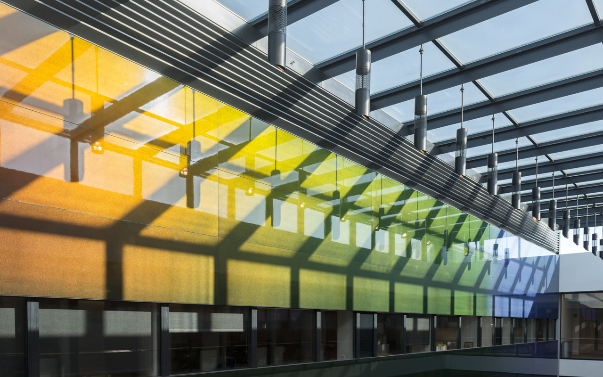

高上：城市和地产的商业创新
高上(Glocal)是一家商业创新咨询机构，高上专注城市和地产领域的战略，设计，以及投资。
高上(Glocal)的团队包括地产，金融，建筑，工程，人力资源，以及地理信息系统等领域的专家。他们曾为哈佛大学，洲际酒店集团，世邦魏理仕，和福斯特事务所等机构提供咨询和研究服务。
高上(Glocal)的团队包括地产，金融，建筑，工程，人力资源，以及地理信息系统等领域的专家。他们曾为哈佛大学，洲际酒店集团，世邦魏理仕，和福斯特事务所等机构提供咨询和研究服务。

高上(Glocal)专业优势
高上(Glocal)的服务包括城市和地产策略，财务顾问，设计，以及地理信息系统。高上(Glocal)在酒店和旅游地产，养老地产，中心商务区(CBD)，商业地产，教育建筑和艺术地产，以及美国地产市场等领域具有独特优势。
服务
